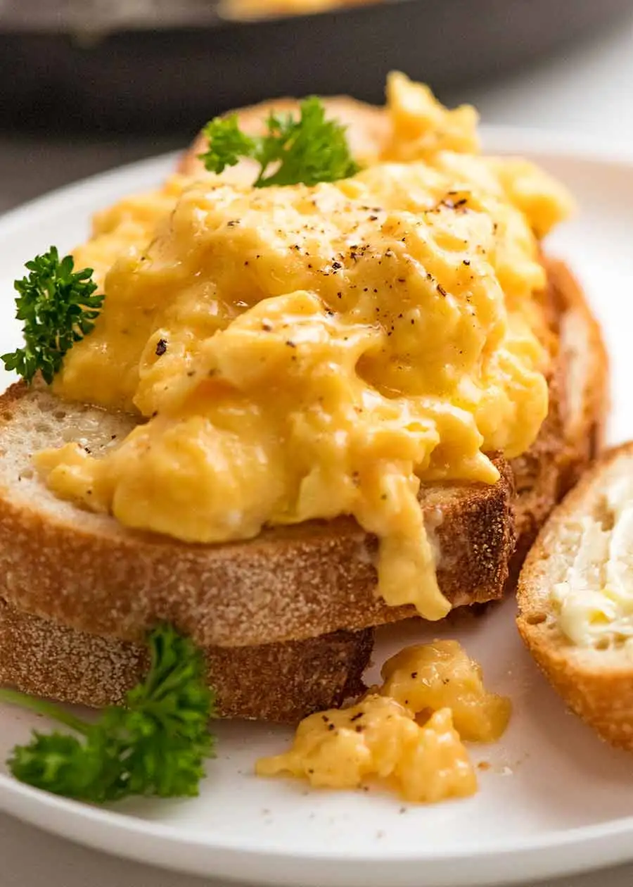

Stir Fry Okra

Description
Soft and creamy scrambled eggs, cooked to perfection.
Ingredients
- 4 eggs, beaten
- 1/2 tablespoon cooking oil
- Salt
- Pepper
Steps
- Add oil to pan and pre-heat on a gentle heat. Never use a warm or hot temperature.
- In a pan, crack 4 eggs and whisk briskly with fork until thoroughly beaten.
- When pan is slightly heated, but NOT hot, add in eggs. (This is important to avoid overcooking.)
- Slowly stir eggs every 30 seconds while on a gentle heat. Do not allow to stick together, or they will turn rubbery.
- Once eggs are almost at desired texture, turn off heat and transfer eggs to plate immediately.
- Season with salt and pepper (to taste) and serve with toast.